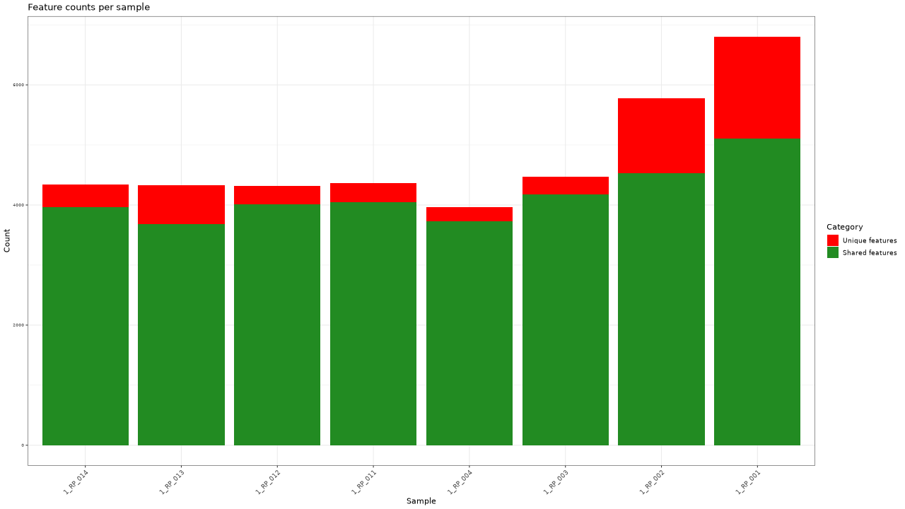
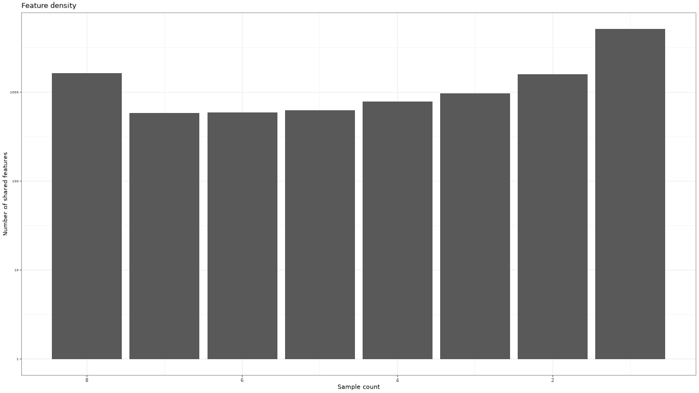
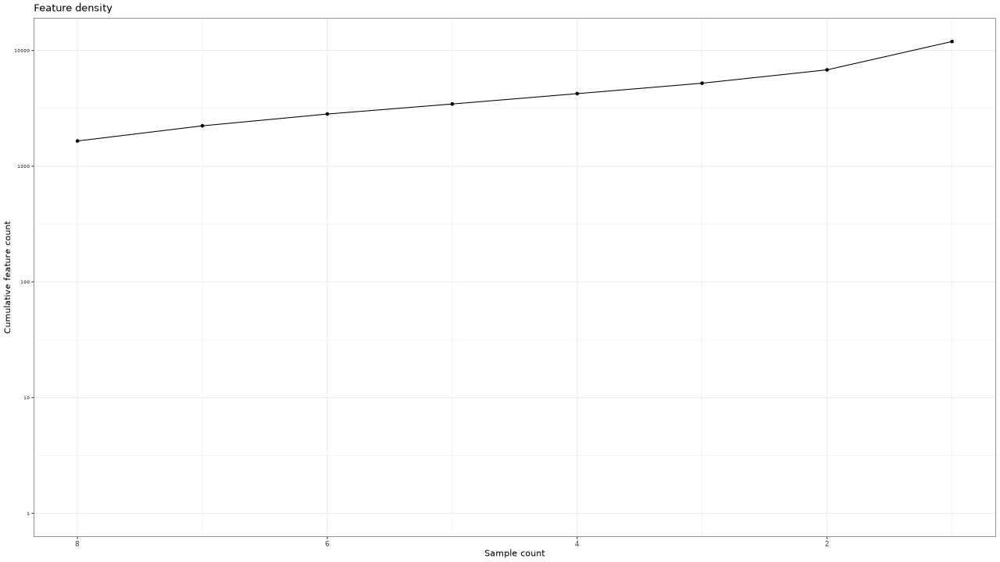

LC-MS Untargeted Metabolomics Processing
Generated by: George Chlipala
Report date: December 18, 2024
Overview
When you publish manuscripts based on data generated at our facility, we would greatly appreciate an acknowledgement of our efforts. Please cite our facility as follows (for example):
Basic processing of the raw data were performed by the University of Illinois at Chicago Research Informatics Core (UICRIC).
We adhere to a general policy for acknowledgements and authorship as established by the Association for Biomolecular Resource Facilities (ABRF) , and we support the following statement from the ABRF.
The existence of core facilities depends in part on proper acknowledgment in publications. This is an important metric of the value of most core facilities. Proper acknowledgment of core facilities enables them to obtain financial and other support so that they may continue to provide their essential services in the best ways possible. It also helps core personnel to advance in their careers, adding to the overall health of the core facility.
Please contact us for assistance in drafting manuscripts.
| Sample | OriginalID |
|---|---|
| 1_RP_001 | 1_RP_001 |
| 1_RP_002 | 1_RP_002 |
| 1_RP_003 | 1_RP_003 |
| 1_RP_004 | 1_RP_004 |
| 1_RP_011 | 1_RP_011 |
| 1_RP_012 | 1_RP_012 |
| 1_RP_013 | 1_RP_013 |
| 1_RP_014 | 1_RP_014 |
- Method: OpenMS FileFilterRost, H.L., Sachsenberg, T., Aiche, S., Bielow, C., Weisser, H., Aicheler, F., Andreotti, S., Ehrlich, H.-C., Gutenbrunner, P., Kenar, E., Liang, X., Nahnsen, S., Nilse, L., Pfeuffer, J., Rosenberger, G., Rurik, M., Schmitt, U., Veit, J., Walzer, M., Wojnar, D., Wolski, W.E., Schilling, O., Choudhary, J.S., Malmstrom, L., Aebersold, R., Reinert, K., Kohlbacher, O. (2016) OpenMS: A flexible open-source software platform for mass spectrometry data analysis. Nat. Methods 13. doi:10.1038/nmeth.3959
-
Custom ParametersLC-MS data were filtered to remove data outside specified retention time and/or m/z window. - -rt = 46:1020
- Method: OpenMS FeatureFinderMetaboRost, H.L., Sachsenberg, T., Aiche, S., Bielow, C., Weisser, H., Aicheler, F., Andreotti, S., Ehrlich, H.-C., Gutenbrunner, P., Kenar, E., Liang, X., Nahnsen, S., Nilse, L., Pfeuffer, J., Rosenberger, G., Rurik, M., Schmitt, U., Veit, J., Walzer, M., Wojnar, D., Wolski, W.E., Schilling, O., Choudhary, J.S., Malmstrom, L., Aebersold, R., Reinert, K., Kohlbacher, O. (2016) OpenMS: A flexible open-source software platform for mass spectrometry data analysis. Nat. Methods 13. doi:10.1038/nmeth.3959
-
Custom ParametersMetabolite features were detected using singleton mass traces. - -ini = /mmfs1/projects/rrc_shared/common/references/openms-inifiles/uplc_qtof.ini
- Method: OpenMS MapAligngerPoseClusteringRost, H.L., Sachsenberg, T., Aiche, S., Bielow, C., Weisser, H., Aicheler, F., Andreotti, S., Ehrlich, H.-C., Gutenbrunner, P., Kenar, E., Liang, X., Nahnsen, S., Nilse, L., Pfeuffer, J., Rosenberger, G., Rurik, M., Schmitt, U., Veit, J., Walzer, M., Wojnar, D., Wolski, W.E., Schilling, O., Choudhary, J.S., Malmstrom, L., Aebersold, R., Reinert, K., Kohlbacher, O. (2016) OpenMS: A flexible open-source software platform for mass spectrometry data analysis. Nat. Methods 13. doi:10.1038/nmeth.3959
-
Custom ParametersFeatures were aligned among the different samples using a POSE clustering approach. - mz_diff = 20 ppm
- rt_diff = 30
- Method: OpenMS FeatureLinkerUnlabeledQTRost, H.L., Sachsenberg, T., Aiche, S., Bielow, C., Weisser, H., Aicheler, F., Andreotti, S., Ehrlich, H.-C., Gutenbrunner, P., Kenar, E., Liang, X., Nahnsen, S., Nilse, L., Pfeuffer, J., Rosenberger, G., Rurik, M., Schmitt, U., Veit, J., Walzer, M., Wojnar, D., Wolski, W.E., Schilling, O., Choudhary, J.S., Malmstrom, L., Aebersold, R., Reinert, K., Kohlbacher, O. (2016) OpenMS: A flexible open-source software platform for mass spectrometry data analysis. Nat. Methods 13. doi:10.1038/nmeth.3959
-
Custom ParametersGroups corresponding features from multiple, aligned samples using a QT clustering approach. - mz_diff = 20 ppm
- rt_diff = 30
- 
- 
- 
Figure 1 . Feature counts per sample
Figure 2 . Density of features (number of samples and number of shared features)
Figure 3 . Cumulative count of features by number of samples
Table 1 . Feature counts per sample
| Sample | Total features | Unique features |
|---|---|---|
| 1_RP_001 | 6803 | 1698 |
| 1_RP_002 | 5782 | 1256 |
| 1_RP_003 | 4467 | 296 |
| 1_RP_004 | 3969 | 243 |
| 1_RP_011 | 4359 | 317 |
| 1_RP_012 | 4321 | 308 |
| 1_RP_013 | 4333 | 651 |
| 1_RP_014 | 4342 | 379 |
Table 2 . Density of features (number of samples and number of shared features)
| Sample count | Feature count |
|---|---|
| 8 | 1652 |
| 7 | 582 |
| 6 | 590 |
| 5 | 625 |
| 4 | 788 |
| 3 | 979 |
| 2 | 1592 |
| 1 | 5148 |
- Method: OpenMS AccurateMassSearchRost, H.L., Sachsenberg, T., Aiche, S., Bielow, C., Weisser, H., Aicheler, F., Andreotti, S., Ehrlich, H.-C., Gutenbrunner, P., Kenar, E., Liang, X., Nahnsen, S., Nilse, L., Pfeuffer, J., Rosenberger, G., Rurik, M., Schmitt, U., Veit, J., Walzer, M., Wojnar, D., Wolski, W.E., Schilling, O., Choudhary, J.S., Malmstrom, L., Aebersold, R., Reinert, K., Kohlbacher, O. (2016) OpenMS: A flexible open-source software platform for mass spectrometry data analysis. Nat. Methods 13. doi:10.1038/nmeth.3959
-
Custom ParametersFeatures were annotated using searches for exact mass matches from a spectrum against a database - -algorithm:mass_error_value = 5
- -algorithm:mass_error_unit = ppm
- -algorithm:keep_unidentified_masses = true
- -algorithm:isotopic_similarity = true
- -algorithm:ionization_mode = positive
- adducts =